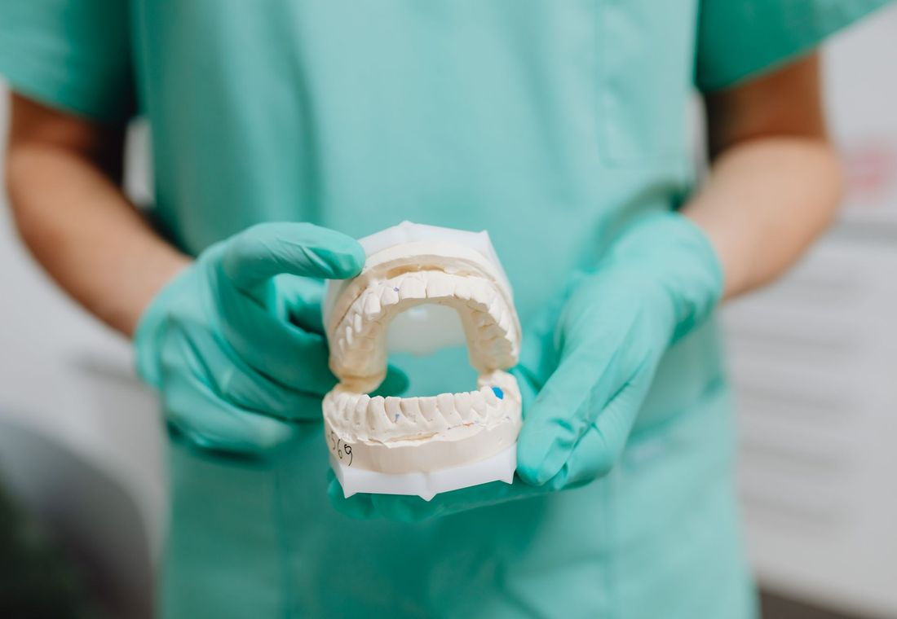
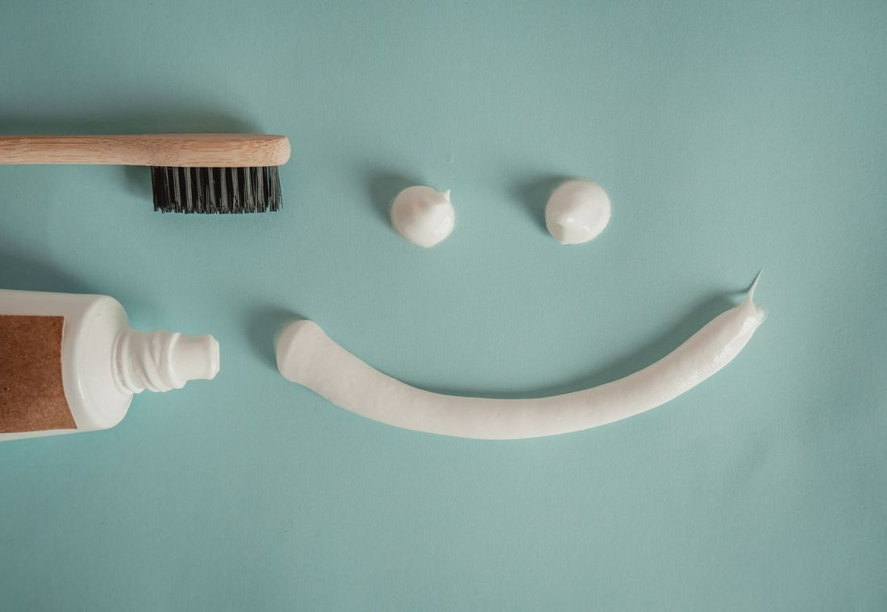

Ağız ve diş sağlığında ihtiyacınız olan tedaviler
Aşağıdaki liste genel bilgi içindir; hangi tedavilerin yapıldığı klinikle netleştirilir. Hangisine ihtiyacınız olduğuna muayenede birlikte karar verilir.
 MUAYENE
MUAYENEMuayene ve panoramik röntgen
Muayenede dişler, diş eti ve çene eklemi birlikte değerlendirilir; gerekirse panoramik röntgenle gözle görülmeyen alanlar incelenir. Bu inceleme, tedavi planının dayanağıdır.
Randevu
TEMİZLİKDiş taşı temizliği
Diş yüzeyinde ve diş eti çizgisinde biriken plak ile diş taşı özel aletlerle temizlenir, dişler cilalanır. Düzenli temizlik, diş eti sorunlarının önlenmesine yardımcı olur.
Randevu ONARIM
ONARIMDolgu
Çürüğün temizlenmesinin ardından diş, dişe uyumlu bir dolgu malzemesiyle onarılır. Hangi malzemenin uygun olduğu dişin durumuna göre muayenede belirlenir.
Randevu KANAL
KANALKanal tedavisi
Çürük ya da travma dişin içindeki sinir dokusuna ulaştığında, tedaviyle bu doku temizlenir ve kanallar doldurulur; amaç dişi ağızda tutabilmektir. Tedavi öncesi ve sonrası röntgenle takip edilir.
Randevu İMPLANT
İMPLANTİmplant
Eksik dişin yerine çene kemiğine yerleştirilen yapay kök, üzerine yapılan protezle dişin işlevini üstlenir. Kemiğin ve diş etinin uygunluğu önce muayene ve görüntülemeyle değerlendirilir.
Randevu KAPLAMA
KAPLAMAZirkonyum ve porselen kaplama
Kırılmış, aşınmış ya da renk ve şekil açısından rahatsız eden dişler kaplamayla yeniden şekillendirilebilir. Malzeme seçimi, dişin yeri ve çiğneme yüküne göre hekimle konuşularak yapılır.
Randevu ORTODONTİ
ORTODONTİOrtodonti: şeffaf plak ve tel
Çapraşık ya da aralıklı dişler, tel ya da şeffaf plaklarla kademeli olarak hizalanabilir. Hangi yöntemin uygun olduğu ve sürecin ne kadar süreceği ağız yapısına göre muayenede söylenir.
Randevu ESTETİK
ESTETİKDiş beyazlatma
Dişlerin doğal tonunu açmak için hekim kontrolünde yapılan bir uygulamadır. Öncesinde diş ve diş eti sağlığının uygun olup olmadığına bakılır; sonuç kişiden kişiye değişir.
Randevu
ÇOCUKÇocuk diş hekimliği
Süt dişleri ve yeni çıkan kalıcı dişler için muayene, koruyucu uygulamalar ve gerekli tedaviler çocuğun yaşına uygun, sakin bir dille yapılır. Amaç, çocuğun diş hekimiyle ilk karşılaşmasını rahat geçirmesidir.
Randevu